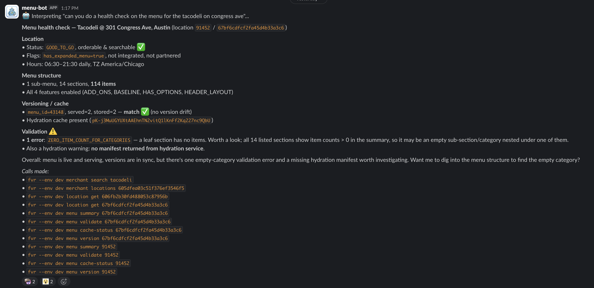

fvr plugin install → SKILL.md registered with Claude Code
# Ask Claude Code:
"Why is the Happy Chicks menu showing the wrong items?"
# Claude autonomously drives:
fvr merchant search "Happy Chicks" # → retailer UUID
fvr merchant locations <retailer-uuid> # → location list + legacy IDs
fvr menu validate <legacy-id> # → validation errors
fvr menu cache-status <legacy-id> # → stale cache detected
Produces a full diagnostic report with root cause & next steps.
Demo
Claude Code plugin — ask a question about a menu
Stage 3
Slackbot
Same capabilities, available company-wide — built by Travis Benton

No install required — accessible to non-engineering teams
Building Methodology
Have used a heavy spec-driven workflow in the past resulting in great tedium and poor results. Decided to try a just-in-time planning approach for this project. Good results.
Brainstorm in web chat — Opus model
Export PRD → docs/ directory
Claude Code reads PRD → plan.md with checkboxes
Per epic: refine → story markdown files
Per story: Plan mode → implementation plan first
Implement with manual confirmation of every edit using TDD methodology
Code review agent after each story
Fix → commit → next story
Coverage: 78.9% overall · core packages: 95–100%
Why Go?
Simple language — less surface area for AI to get wrong
No runtime needed — no Node.js, Python, or Java to install
Compiles to a single binary — trivial distribution
Static asset embedding — SKILL.md lives inside the binary
Explicit error handling
Results
All hack-week scope complete: CLI + Claude plugin + Slackbot
What’s next?
More data sources: alerts, promos, ordering
TUI (design drafted)
Permanent Slackbot (depending on security and token cost)